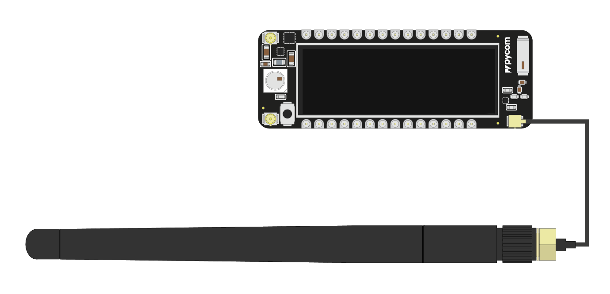

The WLAN (WiFi) is a system feature of all Pycom devices, therefore it is enabled by default. The development boards include an on-board antenna by default, so no external antenna is needed to get started. When deploying your solution, you might want to consider using the external antenna to increase the wireless range.
Note: Changing the WLAN settings while using the Telnet server might break the wireless connection to the device permanently. Please use caution, or a USB cable :)
On this page, we cover:
Note: Generally, code in either sections is applicable to both WLAN modes.
Using the WLAN class from network, you can change the name (SSID) and security settings (auth) of the access point.
from network import WLAN
wlan = WLAN()
wlan.init(mode=WLAN.AP, ssid='hello world')
#use the line below to apply a password
#wlan.init(ssid="hi", auth=(WLAN.WPA2, "eightletters"))
print(wlan.ifconfig(id=1)) #id =1 signifies the AP interface
The device will not be able to access the internet, but you will be able to run a simple webserver. By default, the ip address will be configured to 192.168.4.1.
The WLAN network class always boots in WLAN.AP mode; to connect it to an existing network, the WiFi class must be configured as a station:
from network import WLAN
import machine
wlan = WLAN(mode=WLAN.STA)
wlan.connect(ssid='ssid', auth=(WLAN.WPA2, 'password'))
while not wlan.isconnected():
machine.idle()
print("WiFi connected succesfully")
print(wlan.ifconfig())
Note: If the device hangs in the
whileloop, probably your network is out of reach, or you made a mistake entering your WiFi credentials.
If you are not always in reach of your network (maybe you have a moving device), you can also scan for the network using the example below.
from network import WLAN
import machine
wlan = WLAN(mode=WLAN.STA)
nets = wlan.scan()
for net in nets:
if net.ssid == 'mywifi':
print('Network found!')
wlan.connect(net.ssid, auth=(net.sec, 'mywifikey'), timeout=5000)
while not wlan.isconnected():
machine.idle() # save power while waiting
print('WLAN connection succeeded!')
break
If you want to connect your device to a wireless router, and access it from a telnet terminal, you can use the following example to assign a fixed ip address (192.168.1.10, check with your wifi network for possibilities), use the following script:
import machine
from network import WLAN
wlan = WLAN() # get current object, without changing the mode
if machine.reset_cause() != machine.SOFT_RESET:
wlan.init(mode=WLAN.STA)
# configuration below MUST match your home router settings!!
wlan.ifconfig(config=('192.168.178.107', '255.255.255.0', '192.168.1.10', '8.8.8.8')) # (ip, subnet_mask, gateway, DNS_server)
if not wlan.isconnected():
# change the line below to match your network ssid, security and password
wlan.connect('mywifi', auth=(WLAN.WPA2, 'mywifikey'), timeout=5000)
print("connecting",end='')
while not wlan.isconnected():
time.sleep(1)
print(".",end='')
print("connected")
Notice how we check for the reset cause and the connection status, this is crucial in order to be able to soft reset the LoPy during a telnet session without breaking the connection.
The following script holds a list with nets and an optional list of wlan_config to set a fixed IP
import os
import machine
uart = machine.UART(0, 115200)
os.dupterm(uart)
known_nets = {
'<net>': {'pwd': '<password>'},
'<net>': {'pwd': '<password>',
'wlan_config': ('10.0.0.114', '255.255.0.0', '10.0.0.1', '10.0.0.1')}, # (ip, subnet_mask, gateway, DNS_server)
}
if machine.reset_cause() != machine.SOFT_RESET:
from network import WLAN
wlan = WLAN()
wlan.mode(WLAN.STA)
original_ssid = wlan.ssid()
original_auth = wlan.auth()
print("Scanning for known wifi nets")
available_nets = wlan.scan()
nets = frozenset([e.ssid for e in available_nets])
known_nets_names = frozenset([key for key in known_nets])
net_to_use = list(nets & known_nets_names)
try:
net_to_use = net_to_use[0]
net_properties = known_nets[net_to_use]
pwd = net_properties['pwd']
sec = [e.sec for e in available_nets if e.ssid == net_to_use][0]
if 'wlan_config' in net_properties:
wlan.ifconfig(config=net_properties['wlan_config'])
wlan.connect(net_to_use, (sec, pwd), timeout=10000)
while not wlan.isconnected():
machine.idle() # save power while waiting
print("Connected to "+net_to_use+" with IP address:" + wlan.ifconfig()[0])
except Exception as e:
print("Failed to connect to any known network, going into AP mode")
wlan.init(mode=WLAN.AP, ssid=original_ssid, auth=original_auth, channel=6, antenna=WLAN.INT_ANT)
There are two types of WPA2-Enterprise networks.
Connecting with EAP-TLS:
Before connecting, obtain and copy the public and private keys to the device, e.g. under location /flash/cert. If it is required to validate the server’s public key, an appropriate CA certificate (chain) must also be provided.
from network import WLAN
wlan = WLAN(mode=WLAN.STA)
wlan.connect(ssid='mywifi', auth=(WLAN.WPA2_ENT,), identity='myidentity', ca_certs='/flash/cert/ca.pem', keyfile='/flash/cert/client.key', certfile='/flash/cert/client.crt')
Connecting with EAP-PEAP or EAP-TTLS: In case of EAP-PEAP (or EAP-TTLS), the client key and certificate are not necessary, only a username and password pair. If it is required to validate the server’s public key, an appropriate CA certificate (chain) must also be provided.
from network import WLAN
wlan = WLAN(mode=WLAN.STA)
wlan.connect(ssid='mywifi', auth=(WLAN.WPA2_ENT, 'username', 'password'), [identity='myidentity', ca_certs='/flash/cert/ca.pem'])
Connect a WiFi antenna to this U.FL connector on your development board. This works the same on all variants. The antenna switch is connected to P12.

To switch the signal towards the external antenna, use
from network import WLAN
wlan = WLAN()
wlan.antenna(WLAN.EXT_ANT)